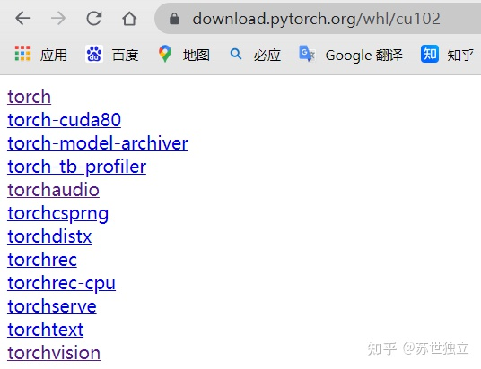
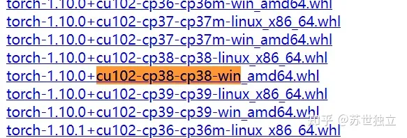
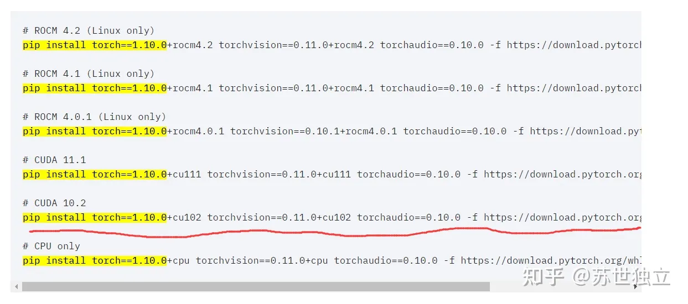
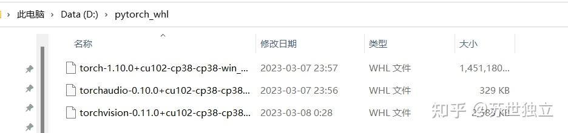
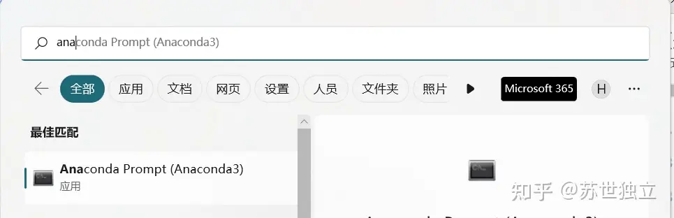
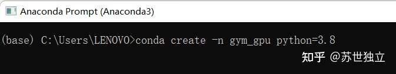
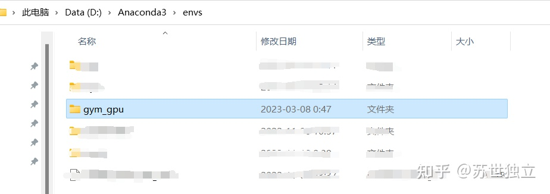
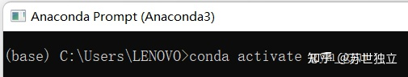
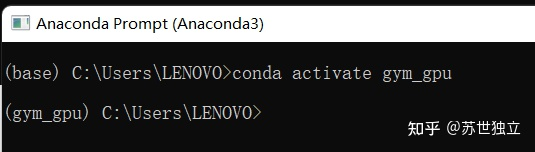
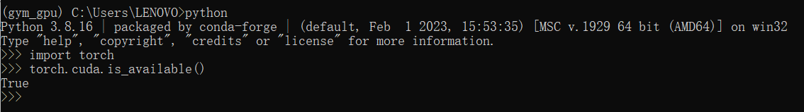

经验：1. 安装cuda10.2（又写作cu102）版本对应的三个组件，是比较稳妥的
2. 国内源容易在安装时自动替换为cpu版本，因此从pytorch官网下载较稳妥
3. 建议使用pip安装，conda安装很可能会安装为cpu版本
-

首先选择torch，ctrl + F 搜索 [cu102-cp38-cp38-win] 这里cu102 是我们下载的 CUDA 10.2 版本，cp38-cp38 是说我们的 Python 版本是 3.8。如果要安装python3.9那将cp3.8改为cp3.9即可。

单击即可下载，这里强烈建议改换手机热点进行下载，速度很快。这里torch版本为1.10.0，我们要去
官网
查找该版本对应的torchvision 和torchaudio版本。ctrl + F 搜索 [pip install torch==1.10.0] 并且对应cuda为10.2。

因此torchvision需要安装0.11.0版本，torchaudio需要安装0.10.0版本。
在之前的
网址
中选择torchaudio，ctrl + F 搜索 [cu102-cp38-cp38-win]，选择版本为0.10.0的。高亮处单击下载。
同理在之前的网址中选择torchvision，ctrl + F 搜索 [cu102-cp38-cp38-win]，选择版本为0.11.0的。高亮处单击下载。
下载了3个.whl文件，建议都安装到同一个文件夹下，比如D:\pytorch_whl

-
安装虚拟环境
默认大家都安装好Anaconda了。在开始菜单中搜索anaconda Prompt，点击进入。

创建python虚拟环境：
conda create -n your_env_name python=x.x
这里your_env_name表示你即将安装的虚拟环境的名字，x.x表示python版本。我这里设置名称为gym_gpu，安装的python版本为3.8，于是输入 conda create -n gym_gpu python=3.8 后回车：

注意gym_gpu文件夹可以在Anaconda的安装目录下的envs文件夹下找到。

之后激活该虚拟环境
conda activate your_env_name
那么这里就输入conda activate gym_gpu 后回车

回车后的结果应该前面有一个（gym_gpu），代表你现在已经进入了gym_gpu这个虚拟环境。

-
加载.whl文件并测试安装是否成功
现在需要依次将之前安装的三个.whl文件加载，需要这三个文件的绝对路径，以我刚才的安装路径D:\pytorch_whl 为例，依次按下面顺序输入(就是输入完一个就按一下回车)：
pip install D:\pytorch_whl\torch-1.10.0+cu102-cp38-cp38-win_amd64.whl
pip install D:\pytorch_whl\torchaudio-0.10.0+cu102-cp38-cp38-win_amd64.whl
pip install D:\pytorch_whl\torchvision-0.11.0+cu102-cp38-cp38-win_amd64.whl
安装过程耐心等待。
安装结束后需要测试是否成功安装gpu版本的pytorch，这里依旧在gym_gpu环境下输入python，进入python编程环境后输入import torch 回车后输入torch.cuda.is_available()。如果返回True则安装成功。

另外补充一下，如果安装过程中出现差错，需要删除某个虚拟环境时，可以在base环境下使用指令
conda remove -n 需要删除的环境名 --all
比如我自己创建的虚拟环境命名为my_torch，但是我想删除它。就可以使用下面的指令：
conda remove -n my_torch --all